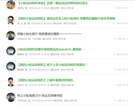

经过长时间而慎重的讨论，我组决定选取北京小米科技有限责任公司的最近新推出的产品--小蚁相机来作为此次广告调查。之所以选择这样一款产品，是出于以下的考量：
1. 小米出品的产品通常与一般同类设备宣传方式不同，多以互联网宣传为主，另外小米在销售产品时也是多以互联网渠道进行，少有实体店交易。作为一个业内的特例，小米非常具有调查价值。
2. 小米作为一个主要以手机为主的科技公司，这次推出相机新品，非常引人关注。我组希望通过此次广告调查更加了解小米本身的运营策略与广告策略。
3. 小米知名度较高，调查难度会小一些。
正是出于以上的考量，我组选定了小蚁相机。
小蚁相机，是小米公司新推出的相机单品，2015年3月2日，小米公司旗下企业小蚁科技正式发布小蚁运动相机，售价399元。小蚁运动相机配备了全球专业运动影像Ambarella（安霸）A7LS处理器、索尼1600万像素Exmor R BSI CMOS图像传感器，以及155°超广角非球面高清光学玻璃镜头，潜水深度可达专业级40米（需配合防水壳配件）。
小蚁运动相机提供了多种录制模式。最高可拍摄1080p/60fps的高速超高清视频、720p/120fps的超高速高清视频，以及240p/480fps的极速视频。相机拍摄的格式为高H.264codec格式、MP4格式，小蚁运动相机支持拍摄1600万像素的单张照片，最高分辨率可达4608x3456c，提供了多种照片拍摄模式，如0.5S-60S的延时摄影、3S-15S的定时拍摄、最高7张/秒的高速连拍等。小蚁运动相机不仅仅是参考了GoPro，也有借鉴到Sony运动相机的部分设计，机身直接配有1/4标准螺丝口，又享受到了标准接口的大量红利。
小蚁运动相机是一款主打便携运动的相机。相机有很多让人眼前一亮的功能，其中包括：对于高动态的物体有非常好的记录；155度超广的镜头，同时，与传统相机相比，小蚁运动相机支持通过wifi与手机相连（暂时只支持安卓系统），连接后支持使用手机操作相机，此外还包括拍照上传社交网络，分享照片等等功能。
小米相机如同其他小米的产品一般，只有互联网销售一个渠道。截止到调查日（2015年4月3日），在小米的官方网站仍然显示小蚁相机缺货中。这也是小米本身营销的一种方式。小蚁相机分为两个版本，一个是基础版本，一个是旅行版本。其中基础版本有丛林绿 / 都市白两种颜色可选，价格为399人民币；旅行版本相比于基础版本而言，多了一套外部配件--自拍杆套装，颜色同样有两种，价格为499人民币。两者都不附带存储卡，存储卡需要另外购买。
小蚁运动相机虽然名字中带有运动两字，但是在我组看来，小蚁相机面向的用户不单单是对于极限运动发烧友准备的。其价格低廉，同时又有不输于同类主流设备的功能，就如同小米的其他产品一般。物廉价美，使得它不单单是一款只适合极限运动的发烧友使用的运动相机，而是有着更加广阔的用户对象。我组认为其面向的人群分为三类。
其中一类就是最典型的极限运动的爱好者，极限运动是指结合了一些难度较高，且挑战性较大之组合运动项目的统称，例如：直排轮、滑板、极限单车、攀岩、雪板、空中冲浪、街道疾降、跑酷、
极限越野、极限滑水等。这些运动往往是对相机的动态捕捉功能有着比较高的要求，而且对于拍摄的自动性往往也有要求。他们采取的拍摄方式往往是通过像小蚁运动相机这样的专注于运动拍摄的相机，将相机固定在运动设备上进行拍摄。最近随着无人机的发展，
也出现了无人机拍摄等等新的拍摄手段，但是无论是固定在运动设备上还是固定在无人机上，都是需要运动相机来实现。这类人群比较关注的是相机的功能，对价格并不是太敏感，因为本身从事极限运动的人群往往是高收入的。
另一类是喜欢旅游的人群。在中国，极限运动的爱好者是一个非常小众的群体，但是旅游在中国是一个非常大众的活动。不仅如此，中国人往往也比较喜欢拍照，无论是拍风景还是自拍。同时在拍照之后，分享的欲望也是比较强烈的，尤其是在当下，网络进入社交化的年代，人们热衷于在网上分享自己的生活。小蚁相机提供的与手机相连，即拍即分享的功能会吸引相当一部分的旅游爱好者。
最后一类就是希望在日常生活中获得更好的拍照效果，但是同时要求相机又要像手机一样便携的用户。现在相机不再是一个只有旅游才会需要的工具，在日常生活中也越发离不开拍照与摄像功能。小蚁相机提供的与手机相连，手机控制相机的功能为专业相机替代较低端的手机摄像头提供了支持，同时小蚁相机非常轻巧便携，能非常合适地解决这一部分人群的需求。

小米深谙互联网营销的核心：口碑营销。来自于中国统计信息服务中心、新华网、中国质量新闻网的报告显示，小米手机获得了手机类综合口碑第一以及质量认可度第一（Android手机）。由此对于小米的口碑可见一斑。小米与其他的互联网科技企业相比，更加关注自己的用户，即米粉的实际诉求。它经常会在自己的小米社区里组织新品试用等等活动，并在其中直接与用户交流，因而小米的用户也对小米倍加推崇。从公司的角度而言，小米口碑非常好。
具体到小蚁运动相机，为了给销售造势，小米在小米社区中提供了免费公测申请，同时也有公测用户在社区进行反馈。从截图来看，大多数公测反馈的用户对于小蚁相机都持有积极的评价，看评价内容，多是集中在相机的便携性，防水性，照片的清晰程度，手机移动端应用的功能等等。另外也有很多手机等硬件设备评测网站对小蚁运动相机进行了评测，其中贬褒不一，这些专业的评测往往关注在一些比较细节的地方。其中褒多在于中文支持，价格亲民等等，贬多在于拍摄质量，外观材质等等，不过从大体来看褒多于贬。
由此可见，小蚁相机在互联网上拥有一个比较好的口碑，用户也会很主动地反馈自己的使用体验，也会很积极地把自己的体验推荐给周围的人，这也是小米系列产品的一向特色。
因为小米一向的饥渴销售，我组很难去统计小米系列产品的具体产量与营业额。但是可以预见的是在小蚁相机发售的前期，为了积累人气等等想法，产量是会偏低的。而营业额在新品新出的时候也会是偏低的。这一切都是为了以后开放销售时候的更好的营业额。
在海外，由于GoPro早期的积极宣传，运动相机=GoPro的印象可谓深入人心。然而在国内，玩极限运动的人相对较少，运动相机对大多数人是个相对陌生的名词。今年年初，GoPro携其系列产品正式进入大陆市场，目前公布的两款定价分别为2998元和3987元。小米选择在此时推出其定价399元的运动相机产品，既可以趁着“运动相机”推广的潮流提高产品知名度，更重要的是填补了运动相机市场阶梯的空白。小米采取低价策略，可以吸引对极限运动（或其他运动相机传统用途）感兴趣但囊中羞涩的消费者，不仅如此，由于低廉的价格，运动相机传统目标客户群之外的消费者也可能会抱着试一试玩一玩的心态购买该产品。
小米一直以来主打学生等年轻人市场，通过良好的性能配置和高性价比吸引这些主要考虑功能与价格的消费群体。从官方论坛反馈来看，大多数小蚁运动相机用户将它用于旅游和生活记录。与极限运动不同，这些场景不需要运动相机发挥极限的性能，对不愿意花大价钱投入高端产品的用户而言小蚁运动相机是理想的选择。
运动相机领域，主要的流行品牌有GoPro以及Sony Action
Cam。在天猫官方旗舰店上GoPro HERO 4 SILVER售价2998，主打高端，与小米的产品处在不同市场阶梯上。本组认为，对小蚁相机构成较大竞争关系的主要是中低端产品，包括专业运动相机厂商的低端产品以及将来可能出现的低价“山寨”。其中索尼入门级运动相机HDR-AS20以999元的价格、丰富的配件，以及消费者对索尼大厂质量的信赖，对小蚁相机构成的威胁最大。
小蚁相机在参数配置方面不输高端产品，从各大网站的评测对比来看，画面质量方面也各有千秋，比较明显的差距体现在小蚁相机没有屏幕、防抖功能以及配件上。用户如果额外购买存储卡等配件，对比索尼的入门级产品，价格优势并不那么明显。由于小蚁相机采用了标准接口，无附带配件也能看作是一项优点：用户可以根据自己所需自由选择所需的配件，这也非常符合小米对于其客户“发烧友”的定位。另外，小蚁运动相机在手机客户端上完善的中文本地化支持也是一大优势。
小蚁相机如同其他的小米设备一样，是使用互联网与社交媒体等等进行推介的。其采取的广告策略有：
就是利用顾客日常记忆的生活体验，在其所记忆的场面重现时提到该店铺，促使记忆该品牌的促销策略。这种策略并非特别强调产品的功能或经营特色，而是把顾客光顾该企业的情景与顾客的生活体验巧妙地融合在一起。
由于小蚁相机被定为为运动相机，因而其广告重点在于将顾客日常拍照记忆与使用小蚁相机联系在一起。当顾客在旅游、运动时想拍摄时便会联想到小蚁相机。
企业与商品自卖自夸的保证，未必一定能说服人。于是，就要采用第三者向消费者强调某商品或某企业的特征的推荐式广告策略，以取得消费者的信赖。所以这种广告策略，又可称为证言形式。
在互联网的数码网站和测评网站写有各种第三方的评测，这些评测能够通过使用者的角度来为小蚁相机进行宣传。
分差别的战略就是在广告活动中侧重宣传广告产品的特点，强调产品差别的广告战略。企业采用这种广告战略可以从该产品与同类产品的差别入手进行广告宣传。此时，采用产品差别广告战略还可以通过宣传在原材料上、性能上、设计上、价格上等多种变更来劝说消费者购买。
与其他运动相机相比，更加便宜、便携。比手机等非专业的拍摄设备比更专业，与单反等相比可在旅行中做到实时在网络上上传照片。
旨在树立产品的形象，或产品创新，合乎“生活潮流”；或产品先进，满足人们的“智能欲望”，给人以有关时代潮流与时代科学的“新知识”，从而给人得出一个关于广告“走在时代思潮前面”的好印象；或突出产品的特异功效，使该产品与同类产品有明显的区别；或宣传其产品价格低廉。
满足人们在旅行途中希望拍出高质量相片的同时实时分享的需求。同时，鼓励顾客多出门旅行也树立了一种积极的形象。
这是在一定的国家、地区或区域的广告战略。致力于中国市场的开发。低廉的价格与专业的性能，高性价比符合大部分中国人的消费观。
企业使用过多种广告媒介后，发现其中一种媒介的效果较好，或是经过调查分析选出最合适的一种广告媒介，然后在一定的时期内，只集中使用这个广告媒介进行宣传。
采用互联网作为媒介。由于互联网的用户更加符合新颖的时尚潮流，也更有可能在外出旅行时需要运动相机来拍摄。
任何品牌的任何行为都会受到国家政策的管束，都需要严格按照相关政策进行，小米也不例外。当初小米盒子上线时就有人认为该产品的全国上市会受到政策的影响，引自科技讯网站：
“根据2011年国家广电总局《持有互联网电视牌照机构运营管理要求》，小米盒子类机顶盒产品，只能选择广电总局批准的内容服务平台，必须与牌照持有方合作才能进入市场。
而目前通过广电总局验收的平台仅有CNTV、百视通、南方传媒、华数、CIBN、湖南广电以及央广广播电视网络台7家，小米盒子只能与其中一家合作才能上市。”小米盒子作为机顶盒类的产品，与国家广电局的工作范畴有交集，因此需要按照规则办事，最后小米盒子与CNTV合作实现了全国上市。然而却有不少人对小米的产品不满意，认为小米并没有实现国家的“三包政策”，对于保修等售后工作做得不完善。雷军在新闻发布会上所说：小米一切产品保证符合国家政策。
这可以看做是小米对于消费者的一个回应，也是一种表态，表明对于国家政策的认可。除了严格遵循国家对生厂商指定的约束政策，国家其实也对国产电子产品品牌制定了支持类的政策。由国家财政部、商务部联合发起的“家电下乡”项目前些年已经在山东等省开展，海尔、长虹等内地手机品牌都被列为该项目的入选企业，这成为国产手机开拓农村市场和消化库存的好时机。
国产手机相关负责人普遍认为，搭“家电下乡”的便车，品牌手机、正规手机在三四级市场的占有率将大幅增加。这样的政策性扶植对于国产电子品牌是一大福音，也表明了国家政策对于国产品牌支持的态度。
尽管在苹果、三星等国际大头的面前，小米显得缺乏竞争力，但是有了国家政策的支持，小米起码在国内的市场上是多了竞争的资本。
运动相机这个概念在中国并没有得到很大的普及，除了一些运动爱好人士，很少有人知道运动相机是什么，更不愿意花钱去买一台运动相机。以运动相机的经典品牌GoPro为例，根据调查可知，淘宝作为该品牌最大的营销渠道，每月的销量也仅仅是五千到六千左右，市场占有非常得小，经济环境非常不利。国人并没有强烈的运动意识，没有定期运动的习惯，是造成运动相机经济市场占有低的原因之一。在国内的媒体平台上很少出现运动相机这个概念，因此广告以及概念普及的投入过少也是经济环境不佳的原因之一。然而小米相机并不一定在经济环境上会吃亏，得益于小米本身的定位--价廉物美。一台GoPro hero3+在京东上的价格是3399人民币，而小米相机的初步定价是399人民币，两者几乎成十倍关系。尽管随着相机的发布和改进，价格注定会继续上涨，但是相比同类产品，小米相机已然价格低廉，这样的低价策略注定会成为小米相机在经济市场的一大优势。
除开小米相比于国外高端运动相机品牌的低价优势，小米相机在国内现有的市场竞争者如下：
随身拍：已转型到安防摄像头领域；
VIDIT：伴随式摄像机，在Pozible上众筹21万元；
萤石：海康威视出品，在京东众筹500多万元；
云狐酷玩相机：主打极限运动；
HTC
Re：水管设计非常有特色，交互上也有创新，国内刚上市不久；
这些国内的运动相机品牌各有各的特色和手段，都必定与小米在运动相机的市场上分一杯羹。
对于小米来说，国内消费者对于相机的主流运用仍然在于旅游和日常生活中，因此小米如果将定位瞄准在旅游和生活，同时又适用于运动，是在目前的经济环境下，最佳的选择。
小米这个品牌有着非常忠诚狂热的一群粉丝，这群粉丝被称为小米的“梦想赞助人”。他们会参与特定的米粉节（小米粉丝的专属节日），自费购买每一台小米手机，甚至有专门研究小米的发烧友，以下段落引自雷锋网《被小米称为梦想赞助商的那群人》：
“在他看来，如果说iPhone是将iOS装在一个精美的盒子里卖给消费者，那早期的小米手机就是将MIUI放在一个简单粗暴的盒子里，不过这对苹果和当时的小米来说都是绝对正确的，用他的话说就是：“事后诸葛亮都明白这个道理啊。”
黄道说他从没在小米手机上失过手，我问他这是褒义还是贬义？他说那得看你怎么理解。没有手机可拆的时候，黄道也会去看看MIUI的每周一更，在脑子里抽象地过一遍新功能。虽然他认为这或多或少是为了升级而升级。但规律性地升级很大程度上避免了某些BUG和脑残设计对用户体验造成的伤害。黄道自诩是个正宗的巨蟹，能敏感地察觉细微的事情，所以他也会在论坛上提出一些改进，无论是否巧合，某些改进也被诡异地采纳了，他觉得这件事情本身就非常有意思。”在引文中，小米发烧友的发烧程度可见一斑。这种消费者与生产者之间密切的联系与互动是小米营造的的文化环境之一，也是支撑小米走到现在的主力。
然而这种文化环境并非空穴来潮，小米其实在粉丝的身上下了不少功夫才得来这样的文化氛围。小米最近主打的活动：“晒出我的五年时光”，是小米今年的米粉节狂欢活动，该活动让粉丝们在小米的主页上进行互动同时赢取丰富的小米产品，消费者们对于这种活动非常期待而且兴奋。类似这样的互动与馈赠使得小米得到越来越多的米粉、发烧友，使得消费者对小米的品牌认同度越来越高，达到一种国内品牌罕见的程度，这种粉丝与品牌互动、粉丝与粉丝互动是小米重要的人文环境。
另外，小米对于品牌对定位也是偏向于年轻人，低价、物美、主打运动、周边产品多、更新及时等因素都是年轻消费者的偏好。这些定位也为小米形成了一种朝气蓬勃的氛围，让人自然而然地将小米和时尚与青春联系起来。
新出的小米相机会在小米已有的这些人文环境中得益，从而得到更多的关注和市场。
我组最终采取焦点小组的方式进行调研，主要是因为，小蚁相机作为一个最近新出的单品，可能没有太多人听说过它，而通过焦点小组的方式可以对这个新品有更加深层次的探讨。
主持人：高策
同学A，上海交通大学，电院，大二学生，典型工科男。
同学B，复旦大学，主修翻译，辅修会计，大三学生，家境殷实。
你知道小米么，你对他们印象如何？
A：小米是一个很懂营销的公司，我的手机就是他们家的，他们最近发展很快啊，我都想去他们那里工作了，就是可惜在北京。
主持：你特么说重点，对他们印象如何
A：不太要脸的公司，但是很成功，手机卖的很好，听说最近又出了插座什么的，他们要决心做智能硬件企业了。
B：我没用过小米，对他不熟啊，就知道性价比还可以。质量还好，逼格不足。
你觉得小米怎么做广告的，为什么如此火爆
B：门户网站的科技板块都对小米有关注，以及它的发布会，他还是性价比手机的开创者，占了先机吧。
你知道小米都有什么产品么？你觉得他们主要都有什么样的特点？
A：很多啊，他们的手机就不说了，还有平板，你（主持）不就去抢了他们的平板么。最近又出了手环，插座，之前还有电视，路由器什么的。
主持：那他们的产品都有什么特点呢
A：便宜是真的，但是全都很坑，都要抢，一般人都抢不到，黄牛都用脚本来抢，怎么抢得过代码？
主持：你觉得他们的产品质量上如何
A：质量还不错吧，我这手机用了大概要有一年了，还没坏过，不过很容易发烫，你（主持人）的手机也是这样吧，大概用一会就很烫了。
主持：也就是说质量不错，价格便宜，就是卖货的方式你不太满意是么
A：嗯差不多，要是不要来抢购这一套就是良心企业。不过看样子他们是要一直这样下去了。
主持：你觉得他们这样是真的像他们说的是货源不足还是有别的意思在里面
A：怎么可能是货源不足，现生产这么发达，他们就是想构造出这种供不应求的局面，让你也头脑发热地去买。
B：饥饿营销吧，但消费者还是会觉得生气。
你觉得小米的产品都是卖给什么样的人的
A：你（主持人）这样的人。
主持：我这样的人是什么人
A：嫌苹果不开放，死活都要用安卓的人。还有一些就是我这样的人，有个手机就行的人。还有就是小米一直自己说的，发烧友，就是只看配置选手机的人。
主持：你对小米至今不公开MIUI系统源码怎么看，题外话
B：你们在说什么啊，我觉得小米是卖给一些追求性价比的人，以及一些发烧友，现在也往高端发展。比如小米Note。
A：我不知道它（安卓）使用了什么开源协议，不知道小米的系统需不需要开源，但是你看三星什么的似乎都有公开自己的代码，我觉得MIUI也是要公开自己的源码的吧。
你觉得小米以后发展方向是什么样子的
A：发展方向，就做手机呗，顺带做做智能硬件。
B：中高端发展，主要是手机，不太知道它智能硬件相关的东西，它们的智能硬件刚刚发展，还没做起来。而且小米一直给人一种很Low的感觉。由于这种感觉，小米做智能硬件这种高科技有点违和。
你知道小米新出的小蚁相机么
A：知道，最近被炒的挺火的，很多网站有他的评测，看过一点。
主持：你对这个相机怎么看
A：就那样，跟小米其他产品一个德行，价格是很便宜，但是又是抢。
主持：你说这么少我没办法交差啊，你觉得它都有什么优点么，除了价格
A：就跟它说的一样呗，是运动相机，适合运动人群。其他不觉得有什么了。
你有自己的相机么
A：有一个卡片机，基本一年用不了一次。
B：没有，我只有手机要不你赞助一个?
你会买它么，你觉得什么样的人会去买
A：没钱，有钱也不买，没用啊。我平时又不照相，手机也够了。可能买它的人要么是小米脑残粉，要么就是对运动相机有想法的。
主持：你觉得它跟手机内置的摄像头比有什么优势么
A：对我不觉得有什么优势，可能对于运动人群有比较大的吸引力吧。
主持：所以就你平时拍拍照的需求，是不会买它是么
A：嗯
主持：那你觉得除了运动人群，和小米的脑残粉，还有谁会去买呢
A：想不到了，不觉得这个相机有很大吸引力
主持：那你知道这个相机有跟手机相连，即拍即传的功能么
A：知道，但是不觉得有很大吸引力。我手机摄像头本来也就可以。
B：我没妹子，没钱，不买，我室友说他会买。
主持：你室友买的理由是什么啊
B：体验下小蚁和国外厂商的哪个好。
主持：你室友有用过国外的产品么
B：嗯，他高富帅。
你有从什么地方看到它的广告么
A：就有几篇评测吧，别的地方还真没有看到广告，小米的东西都是这样，很少有广告，都是靠口碑传播，跟苹果其实差不多。
主持：口碑传播是什么意思
A：就是一传十十传百那种，靠互联网来打广告，小米有点像这样，平时也没有看到他们的广告，都是身边同学会告诉你，有个牌子叫小米，手机真是好用，这样。
B：是今天才知道有这样一个产品。
你觉得小蚁相机最后销量会如何
A：肯定不如小米手机那样成为街机，现在手机是刚需，相机不是。估计就像小米手环那样，因为相机定位也只是个手机的扩展，就是手机上一个应用，跟手环一样啊。
主持：小蚁相机的定位是手机的扩展是么
A：差不多吧，我觉得。